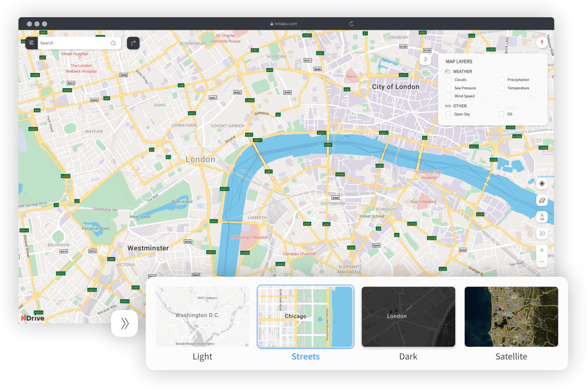
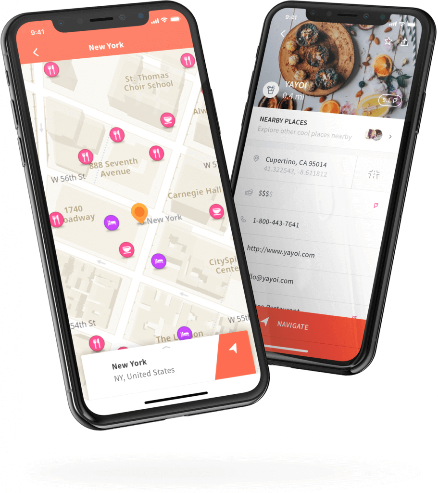
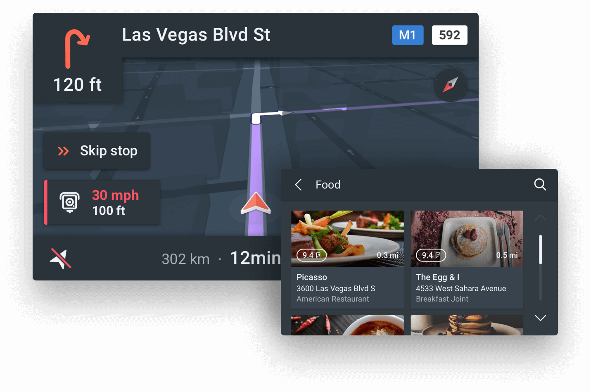

- NMaps
- Products
- About
- Careers
- Support
- Blog
- Presskit
Powered by you
We’re one of the last independent developers and providers of state-of-the
art Turn-by-Turn GPS navigation software and Maps for Smartphones and
Automotive.
- Multi-Layered
customizable Maps - Tailor your geo information to suit your company’s daily
operations. Weather info, road conditions, fleet
localization, brick-and-mortar businesses details, you
decide what to see.
- 
-
NDrive has developed a customer base of several million
active users in more than 50 countries and is very well
positioned to capitalize on high-growth markets.
- 
- Navigation features & travel
content in one beautiful app - Free, offline, content-rich maps that allow you to explore new places
and drive with advanced turn-by-turn instructions. Did we mention that
it’s all free? Download all the maps you need, without limits.
-
NDrive takes advantage of its navigation expertise by
developing an array of location based solutions
for clients in very diverse business areas.
- Two solutions in one app
- An embedded platform that connects the car to NDrive’s mobile services and your smartphone.
- A brought-in app that allows the in-vehicle display to interact with the NDrive mobile app via Bluetooth®, MirrorLink, USB, Wi-Fi, Bosch mySpin and Ford Sync.
- 